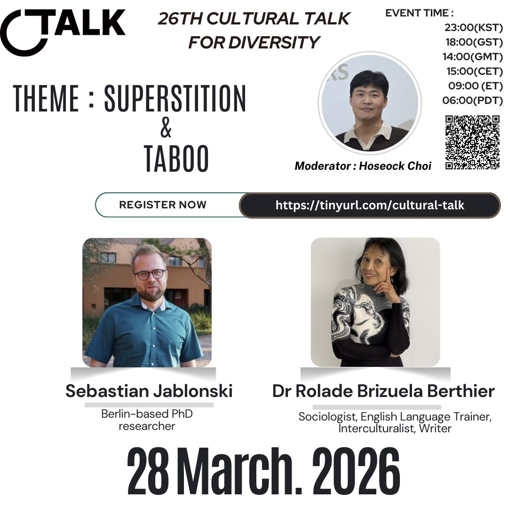

26th Cultural Talk For Diversity
Theme: Superstition & Taboo

Event Details
Date: 28 March, 2026
Time: 23:00 (KST) / 18:00 (GST) / 14:00 (GMT) / 15:00 (CET) / 09:00 (ET) / 06:00 (PDT)
This event has already taken place and is now part of our archive.
Conference Overview
This session explored how superstition and taboo shape everyday values, relationships, and ideas of belonging across cultures. By bringing together two different perspectives, the event invited participants to reflect on how inherited beliefs continue to influence both intimate life and broader social expectations.

Sebastian Jablonski
Berlin-based PhD researcher
Sebastian works on memory culture, politics of storytelling, and transnational histories, with a focus on Europe and the Pacific. He translates complex questions into clear, engaging discussion and values respectful exchange across diverse audiences.
Topic: Between Blessings and Boundaries: How Village Taboos Shaped Everyday Life in Poland
Reflecting on inherited belief systems in a small village in Poland, this talk looks at how taboos carry ideas about purity, luck, gender roles, and belonging, and how such beliefs persist or transform across generations.

Dr Rolade Brizuela Berthier
Sociologist, English Language Trainer, Interculturalist, Writer
Rolade has worked in Asia, Australia, and Europe for universities and government organisations. Author of "Where You Are Really From: Humour and Introspection into Identity," she runs a sociological blog on ethnicity and belonging.
Topic: The Trailing Partner: When Global Romance Meets Career Reality
This talk looks at the often-unspoken social expectations that shape international relationships, career moves, and partnership roles. By examining the "trailing partner" experience, it connects romance and mobility to the taboos, gender norms, and assumptions that quietly influence major life decisions.
Related Coverage
- 금기와 미신, 고대 민속과 현대의 이주 현실을 잇다 (Korean)
- Uncovering Humanity Beyond Taboos and Superstitions (English)